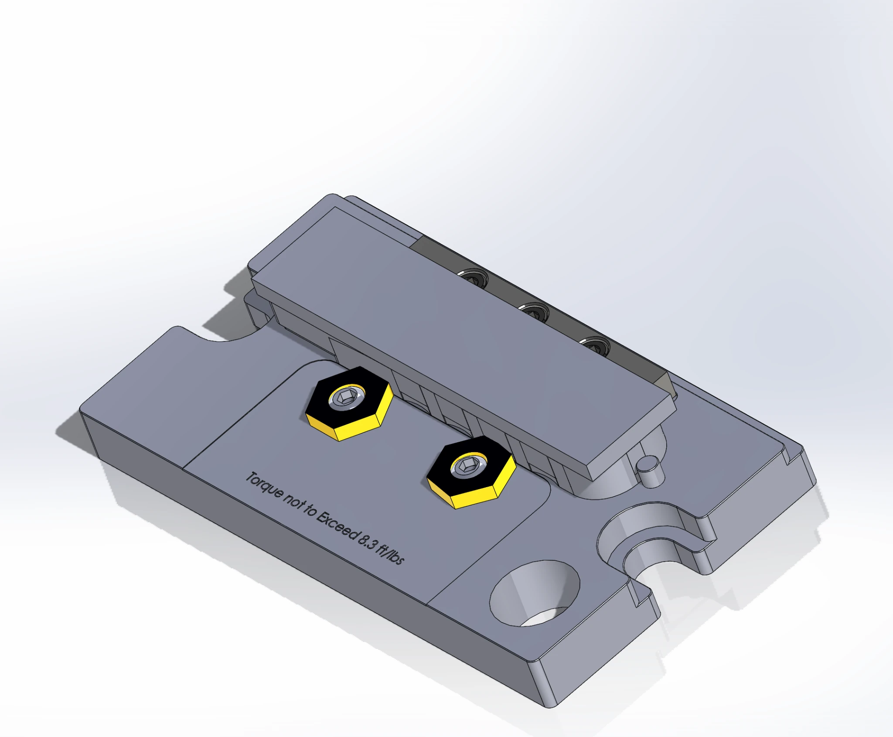
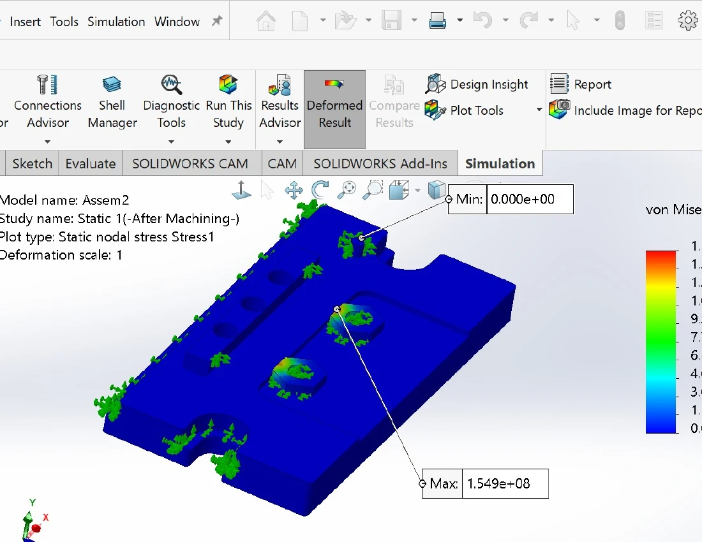
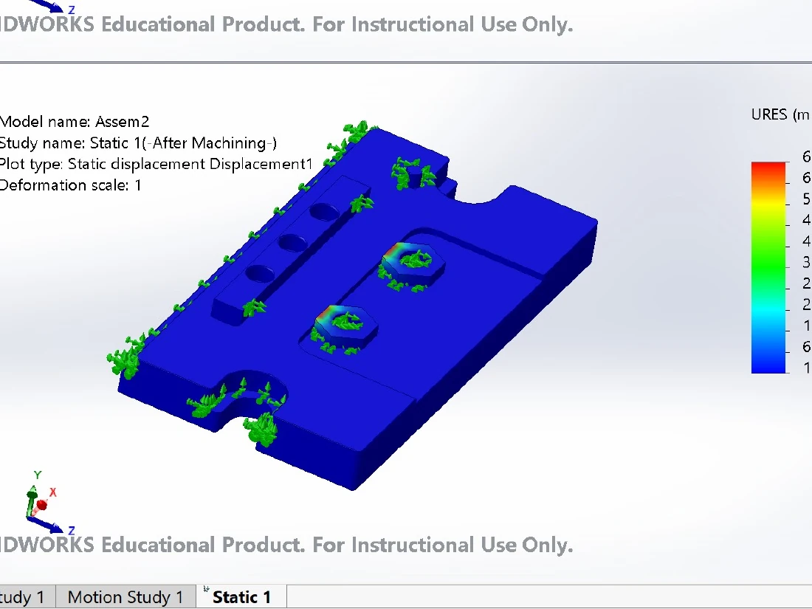
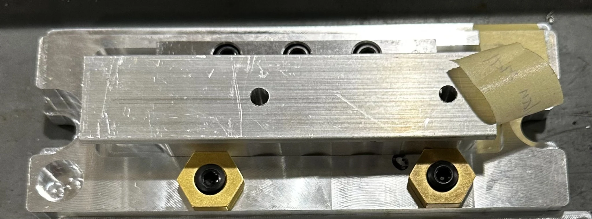

IME 450 / FIXTURE DESIGN LAB · SPRING 2026
Utility Blade
CNC Fixture.
Designed and manufactured a datum-based workholding fixture for second-operation machining on a Haas EC-400, then successfully completed a machining trial.
The 60-second changeover and 3.0 minimum safety factor were design requirements, not independently verified test results.

01 / Finished utility blade fixture mounted in the CNC machine.
Our two-person team developed a common fixture for two utility-blade-handle halves, loaded individually in the same location for their second CNC machining operation.
The fixture had to reference previously machined datum features, leave tool access for the Haas EC-400, and be practical to locate, clamp and indicate on the tombstone-mounted setup.
The engineering challenge was to translate drawing datums into reliable shop-floor workholding while accounting for cutting loads and the effect of clamp forces on the workpiece.
Part load and unload time target
Minimum clamping-force safety factor
One finished part per loading cycle
Maximum fixture base dimensions
Additional requirements: locate from qualified Op 1 datums, indicate the fixture to machine axes, and allow operation of both handle sides without simultaneous loading.
03 / DEVELOPMENT
From CAD
to cutting metal.
Locate from the datums. The broad fixture-plate face supports datum A. A rail provides a lateral locating reference associated with datum B, while an end-stop pin references datum C. The Mitee-Bite hardware clamps the part against the locating features.
Size the workholding. The calculated tangential cutting force was 83.16 lbf. A required 3.0 design factor established a factored cutting-load target of 249.48 lbf; we selected Mitee-Bite clamps rated by the manufacturer at 800 lbf each.
Plan for machine setup. We included an indicating band so a dial indicator could be used to align the fixture with the CNC machine axes.

04 / ENGINEERING VALIDATION
Checking the effect
of clamping.
SolidWorks static analysis evaluated the workpiece response under modeled clamping forces and locating constraints. The simulation reported a maximum von Mises stress of 154.9 MPa and maximum resultant displacement of approximately 0.0068 mm. These are model predictions, not physical measurement or proof of an achieved holding-force safety factor.


The manufacturer's clamp-force rating describes the individual clamp under specified conditions; cutting-force resistance also depends on clamp direction, friction, actual preload and locating contact. The specified factor of safety was not verified by a measured test.

05 / PHYSICAL BUILD
Built for actual
machining.
The finished fixture was machined and installed on the Haas EC-400. The workpiece was seated against the locating features, secured with the Mitee-Bite clamps, and the indicating band provided a reference for checking alignment.
The planned machining operation was completed successfully, with no issues observed during the trial. We did not record quantitative changeover time or workpiece movement during cutting.
Explore other projects06 / MACHINE SETUP
Checking the
setup.
The indicating band gives the operator an accessible reference surface for a dial indicator. This video documents the alignment check on the machine, connecting the CAD decision to actual fixture setup.
07 / TAKEAWAY
Design meets
manufacturing.
A fixture is more than a shaped plate: it must locate a part, withstand machining loads, allow tool access and be practical to set up.
Our team combined datum-based design, an 83.16 lbf cutting-force calculation, commercially specified clamps and deformation simulation to inform the workholding layout. The fixture was then built and successfully used for machining.
Clamping capacity, actual slip resistance and the <60-second changeover target were not quantified during the machining trial.